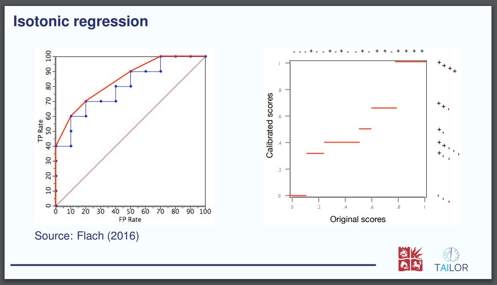
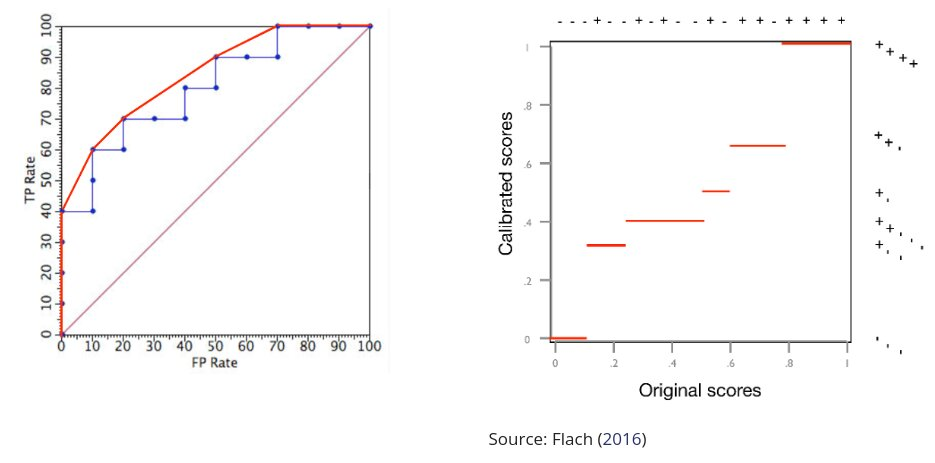
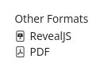

From \(\LaTeX\) Beamer to Quarto#
The use case Quarto course example shows how to start a Quarto course with multiple
outputs from zero. In this use case we start from an already existing set of
slides made with \(\LaTeX\) package beamer.
The original set of slides can be found at ./data/cla-cal-slides.pdf, and
the course generated in this use case is available at
https://tailor-uob.github.io/mooc_trustworthy_ai/cha_wahcc/wahcc.html.
This use case explains the process followed to generate the Quarto course
material paying special attention on the largest difficulties found during the
process. In order to replicate the steps involved you can download the presentation source files in this link.
To generate the slides first unzip the downloaded file and run pdflatex and biber as follows
unzip -X cla_cal_slides.zip
pdflatex main.tex
biber main
pdflatex main.tex
The rest of the use case uses the content of the zip file to extend the Quarto
project started in the use case Quarto course example.
Pandoc: from latex to markdown#
Depending on the size of the \(\LaTeX\) project it may be possible to manually
copy the main content and edit it in such a form that is markdown compliant.
This may be a good solution as at the end there is no perfect automation to
convert latex to markdown. However, there are a few alternatives that will do
part of the job automatically. For example, pandoc is a tool to convert text
documents into a multitude of other formats. The command to convert a \(\LaTeX\)
file to markdown is the following.
pandoc main.tex -s -o main.md
However, this will result in a markdown with only the titles of the sections
and empty content. This is because the \(\LaTeX\) source code of this example
contains several definitions and new commands that can not be converted by
pandoc without manual modifications.
The first thing that needed to be changed was to define the command
brightFrame which was previously defined in a separate file that contained
lots of other definitions and commands. Remove the line 44 that loads the
external file frame-commands.tex.
44: \input{latex/frame-commands}
And define the new command brigthFrame in the main.tex file
\newcommand{\brightFrame}[2]{
\begin{frame}
\frametitle{#1}
#2
\end{frame}
}
Only with this change the resulting markdown file will contain most of the
original information including tables, some figures, equations, and references.
The resulting markdown file needs to be renamed to include the Quarto extension
.qmd, and it can be copied to a Quarto project together with the figures
folder, bibliography file and some of the other documents.
{kind=link}
Fig. 10 Begining of the markdown document converted by Pandoc and rendered by Quarto.#
{kind=link}
Fig. 11 PDF figures in the markdown file rendered by Quarto.#
{kind=link}
Fig. 12 Equations generated by Quarto from the markdown file.#
Fig. 13 Errors from undefined terms that were not correctly converted by pandoc.#
Another problem is that the original \(\LaTeX\) file did not indicate the
extension of some figures that were originally PDFs. With the absence of the
file extension Quarto assumes that the figures are png files which is not
correct. An option would be to manually modify all the figures in the Quarto
markdown file clearly specifying the extension. However, in this case it is
better to convert all the pdf figures to png, as those will be rendered
better in the website.
Before converting the pdf files to png it will be necessary to crop all the
pdf files as some of them have invisible parts that will show incorrectly in
the png version. Running the following shell script will crop all the pdf
files in the current folder.
#!/bin/sh
# it depends on texlive-extra-utils
# Install:
# sudo apt-get install texlive-extra-utils
for f in ./*.pdf
do
echo "Croping file $f"
pdfcrop "${f}" "${f}"
done
Then we can proceed to convert all the pdf files. I have defined my own
shell command to convert a set of pdf files to png
#!/bin/sh
# depends on gs
# sudo apt-get install gs
for in_file in "$@"
do
out_file="${in_file%.pdf}.png"
echo "Converting file ${in_file} to ${out_file}"
gs -sDEVICE=pngalpha -o ${out_file} -sDEVICE=pngalpha -r1200 ${in_file}
done
It is possible to convert all the pdf in the current folder with
convert_pdf_to_png ./*.pdf
Only with this change all the figures that did not specify the extension will
be loaded. It is also convenient to change the rest of the extensions
.pdf to .png now that we have the bitmap version of all figures. And
manually change the markdown of a couple of figures
Figure sizes and positions#
Figures in the original set of slides were positioned and adjusted to fit the
spacing provided by \(\LaTeX\) beamer. The change of spacing in the Quarto
output makes it difficult to fit the figures in an appealing manner. For that
reason, we had to manually adjust the automated generated markdown code. The
original \(\LaTeX\) code
\includegraphics[height=0.7\textheight]{figures/ROCCH.pdf}\hfill
\includegraphics[height=0.7\textheight]{figures/ROCcal2.pdf}\\
Source: \textcite{flach2016roc}
which considered the height of the slides to position them correctly as follows

The code was automatically converted to markdown keeping the original height proportions
{height="0.7\textheight"}
{height="0.7\textheight"}\
Source: @flach2016roc
However, the spacing in the Quarto webpage didn’t had the same vertical
dimensions, which made the figures extend to a large portion of the webpage. We
manually changed the code by partitioning the body space into columns as
follows
:::: {.columns .v-center-container}
::: {.column width="40%"}

:::
::: {.column width="10%"}
:::
::: {.column width="47%"}

Source: @flach2016roc
:::
::::
which resulted in the following output

Generating figures from source code#
The original slides required the figures to be generated in advance and
imported from \(\LaTeX\). However, given that we had the Python code to generate
the figures it is better to embed the code, which can be modified in the
markdown file if we want to change the example. For example, the following
markdown code loaded a figure
{width="90%"}
which was originally generated with the following Python code. By adding the
code to the markdown it is possible to generate the same figure during
compilation both in the Quarto example, and in this same Jupyter Book
roadmap.
#| code-fold: true
#| code-summary: "Show the code"
import numpy as np
import matplotlib.pyplot as plt
from pycalib.visualisations import plot_reliability_diagram
labels = np.array([0, 0, 0, 1, 0, 1, 1, 1])
scores = np.array([0.1, 0.1 ,0.4, 0.4,0.7, 0.7, 0.7, 0.9])
bins = [0, 0.25, 0.5, 0.85, 1.0]
fig = plt.figure(figsize=(5, 4))
fig = plot_reliability_diagram(labels, np.vstack([1 - scores, scores]).T,
class_names=['not 1', 'rain'], bins=bins,
fig=fig, show_gaps=True,
show_bars=True)
Generating Reveal.js slides#
Quarto allows the generation of multiple type of outupt formats from the same
markdown file. By adding the following configuration to the header, Quarto
will generate slides and provide a link on the right navigation bar.
format:
html:
css: wahcc_style.css
revealjs:
logo: "../images/logos/tailor_and_uob.svg"
output-file: slides-cla-cal.html
slide-number: true
width: 100%
height: 100%
incremental: true
smaller: false
auto-stretch: false
chalkboard: true
bibliography: references.bib

{kind=link}
Fig. 14 Some of the slides created by Quarto in the Reveal.js engine.#
Questions and answers#
There are various ways in which questions and answers can be incorporated in the resulting website. In this particular case we opted to use notes with hidden text that can be inspected when clicking.
Q: What is going to happen when you click this question?
Clicking a dropdown note reveals some hidden text.
It is possible to work on multiple answers by stacking blocks of text together.
Question 1
Is only one of the following answers correct?
Answer: Yes
Correct. Only this answer is correct.
Answer: No
Incorrect. Only the previous answer is correct.
Video recordings#
The Universitat Politècnica de València counts with a physical infrastructure to record teaching sessions with a speaker in front of a green screen and accompanying slides that are placed in the background after recording. Some of the functionalities provided are the automatic detection of slide changes that presents the different slides in the video timeline for easy navigation, and the automatic generation of captions in various languages. For this use case Peter recorded various short videos one for each subsection of the presentation.
Videos can be embedded into websites with the <iframe> tag, which allows to
embed one web page into another. The following html code is an example.
<iframe allowfullscreen
src="https://media.upv.es/player/embed.html?id=003597b0-bf29-11ed-83a4-bf04f88f22c5"
style="border:0px #FFFFFF none;" name="Paella Player" scrolling="no"
frameborder="0" marginheight="0px" marginwidth="0px" width="640" height="360">
</iframe>
Which shows the first video of the currently explained use-case.
It is a good idea to make short videos (between 5 and 10 minutes) with condensed ideas. This provide flexibility to the students to watch the videos during multiple sessions, and allows the reuse of content among different courses if the concepts are concise and general.
Breaking into slides and sections#
The original set of slides had a specific structure that may not be good for a
website. Furthermore, the Reveal.js slides generated from the resulting
markdown will not preserve the exact same divisions, which need to be manually
specified in the markdown file. In this use-case some of the slide’s title have
been converted into sections or subsections manually. A new slide is
automatically generated for each header of level 1 (#), including only the
title, and headers of level 2 (##) create a new slide with that title and the
following content. If a slide has too much information this can be split into
other slides with an horizontal rule.
---
Conditional content#
In certain situations we may want to show different content for different
output formats. For example, in the current use case the videos are only shown
in the html website, but not in other static documents or the revealjs website.
Using the .content-visible and .content-hidden directives it is possible to
specify parts of the markdown that are rendered only in the specified formats.
The following are two self-explanatory examples.
::: {.content-visible when-format="html" unless-format="revealjs"}
This content will be visible in html websites, but not on html revealjs.
:::
::: {.content-hidden when-format="doc"}
This content will not be shown in word documents.
:::
Other changes#
The markdown file required additional modifications to make the website and the Revealjs slides look good. Among the those changes are:
Remove empty lines between each element of a list
Manually added
highlightswith `text to highlight`Fix multiple issues with \(\LaTeX\) and added definitions and packages in the header
Adjusted the size of tables, figures and code to better fit the webpage and the slides
MyST client: \(\LaTeX\) to html#
The MyST client Python package can convert slides made with \(\LaTeX\) Beamer to html. However, we didn’t find a method to obtain the intermediate MyST markdown files that are automatically generated, which may have done the process described above with pandoc much easier. A guide on how to make this conversion can be found at https://mystmd.org/guide/writing-in-latex. Thi section also provides a quick summary of the guide that results in a good html version.
This method requires the installation of the MyST client[1], which also requires an updated version of node. The installation of the required version of node can be done by creating a virtual environment for the specific version.
pip install nodeenv
You can list the available node version for virtual environments with
nodeenv --list
When this guide was written the required version was 20.11.1 which can be
loaded by creating the virtual environment with the specific version and
loading it.
nodeenv -n 20.11.1 node_env
source node_env/bin/activate
node -v
# v20.11.1
npm -v
# 10.2.4
One consideration from this example is that the \(\LaTeX\) environment refsection
is not currently supported, and all the environments need to be removed. This
can be done by removing the beginning and end of each environment.
\begin{refsection}
...
\end{refsection}
The resulting website is in general very well formatted with some minor problems. The following is a capture of the resulting front page with a navigation bar on the left for the different documents and on the right side for the sections of the current document.
{kind=link}
Fig. 15 Automatic conversion of \(\LaTeX\) beamer file into a website with MyST client.#
The previous figure shows one of the issues with the lists, which in this particular case were not converted to markdown correctly. However, tables, images and equations were correctly rendered in most cases.
{kind=link}
Fig. 16 Simple \(\LaTeX\) table converted with MyST client to markdown. The defined colors in \(\LaTeX\) is not rendered correctly.#
{kind=link}
Fig. 17 Bitmap and pdf images are correctly converted into bitmaps and placed in the right location.#
{kind=link}
Fig. 18 Most of the equations are correctly displayed, even with colors.#
Comments and line breaks#
confidence $c$, is equal to $c$: $$\begin{aligned} P(Y=i \: | \: \hat{p}_i(\mathbf{x})=c)=c\qquad\text{where }\ i=\argmax_j \hat{p}_j(\mathbf{x}). %P\Big(Y=\argmax\big(\vph(X)\big) \: \Big| \: \max\big(\vph(X)\big)=c\Big)=c.\end{aligned}$$confidence $c$, is equal to $c$: $$\begin{aligned} P(Y=i \: | \: \hat{p}_i(\mathbf{x})=c)=c\qquad\text{where }\ i=\argmax_j \hat{p}_j(\mathbf{x}). \end{aligned}$$